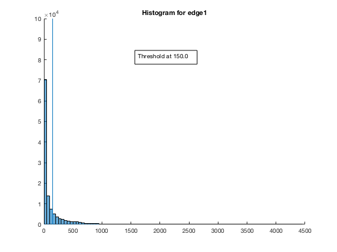
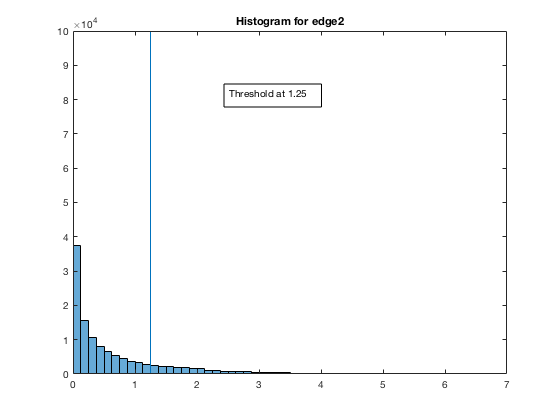
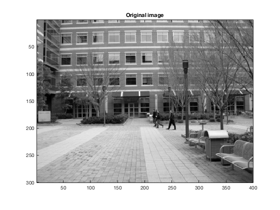
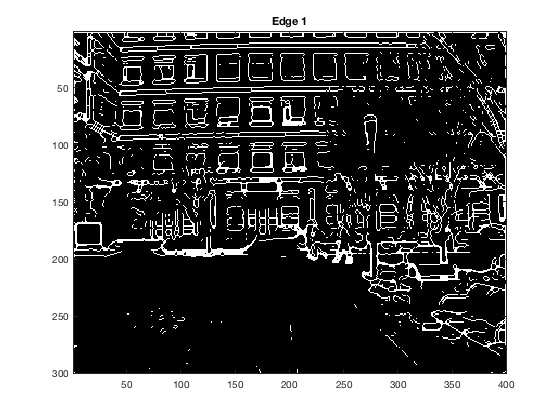
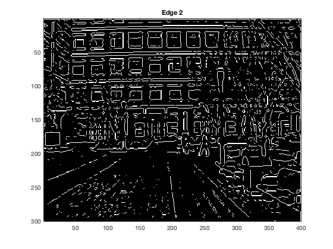

load('edgethresh.mat');
max1 = max(reshape(edge1, 1, []));
max2 = max(reshape(edge2, 1, []));
figure(1);
hold on
hist1 = histogram(reshape(edge1, 1, []), [0:50:max1]);
line([150,150],[0,100000])
dim = [.4 .5 .3 .3];
annotation('textbox',dim,'String','Threshold at 150.0','FitBoxToText','on');
title('Histogram for edge1');
figure(2);
hist2 = histogram(reshape(edge2, 1, []), [0:0.125:max2]);
line([1.25,1.25],[0,100000])
dim = [.4 .5 .3 .3];
annotation('textbox',dim,'String','Threshold at 1.25','FitBoxToText','on');
title('Histogram for edge2');
thresh1 = 150.0;
thresh2 = 1.25;
fprintf('Threshold for edge 1: %f\n', thresh1);
fprintf('Threshold for edge 2: %f\n', thresh2);
edge1new = edge1 > thresh1;
edge2new = edge2 > thresh2;
detect1 = edge1new ;
detect2 = edge2new ;
detect1 = bwmorph(detect1, 'thin');
detect2 = bwmorph(detect2, 'thin');
figure(3);
imagesc(I);
colormap('gray');
axis image;
title('Original image');
figure(4);
imagesc(detect1);
colormap('gray');
title('Edge 1');
figure(5);
imagesc(detect2);
colormap('gray');
title('Edge 2');
Threshold for edge 1: 150.000000
Threshold for edge 2: 1.250000
    